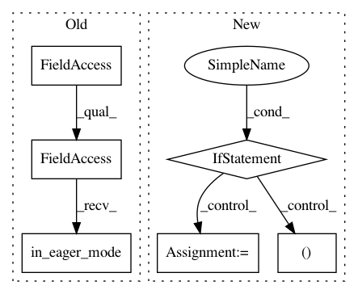

2aa5cccc7c65d14305e60e0a61781aa11cb7142d,deepchem/models/tensorgraph/layers.py,GRU,create_tensor,#GRU#Any#Any#,1092
Before Change
self.out_tensors = [
self.out_tensor, initial_state, final_state, zero_state
]
if tfe.in_eager_mode() and not self._built:
self._built = True
self.variables = self._cell.variables
if tfe.in_eager_mode():
After Change
initial_state = kwargs["initial_state"]
else:
initial_state = zero_state
if tf.executing_eagerly():
out_tensor, final_state = self._rnn(
parent_tensor, initial_state=initial_state)
else:
with tf.variable_scope(self.name or "rnn"):
out_tensor, final_state = tf.keras.layers.RNN(
gru_cell, return_state=True, return_sequences=True)(
parent_tensor, initial_state=initial_state)
if set_tensors:
self._record_variable_scope(self.name)
self.out_tensor = out_tensor
self.rnn_initial_states.append(initial_state)
In pattern: SUPERPATTERN
Frequency: 3
Non-data size: 6
Instances
Project Name: deepchem/deepchem
Commit Name: 2aa5cccc7c65d14305e60e0a61781aa11cb7142d
Time: 2019-03-28
Author: peastman@stanford.edu
File Name: deepchem/models/tensorgraph/layers.py
Class Name: GRU
Method Name: create_tensor
Project Name: deepchem/deepchem
Commit Name: 2aa5cccc7c65d14305e60e0a61781aa11cb7142d
Time: 2019-03-28
Author: peastman@stanford.edu
File Name: deepchem/models/tensorgraph/layers.py
Class Name: LSTM
Method Name: create_tensor
Project Name: deepchem/deepchem
Commit Name: eaff287af9039f2ba1bbf86182a0457799de4033
Time: 2018-03-27
Author: peastman@stanford.edu
File Name: deepchem/models/tensorgraph/layers.py
Class Name: GraphConv
Method Name: create_tensor